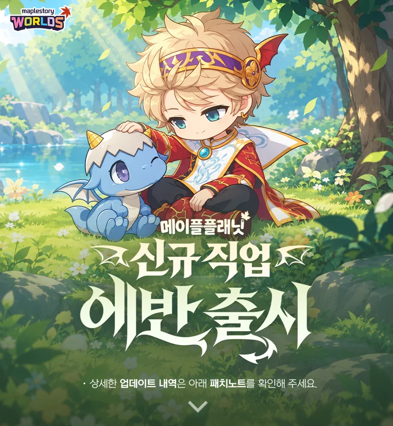
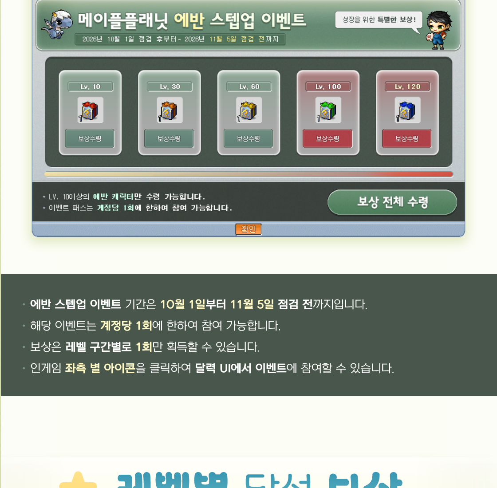

메이플플래닛 에반 스킬트리 0~10차 마스터 레벨 32종, 드래곤 소울 선행조건 초보자 정리
메이플플래닛에 신규 직업군 에반이 10월 1일 패치로 들어왔는데요, 공식 패치노트를 열어 보니 0차부터 10차까지 차수가 유난히 길고 스킬마다 마스터 레벨이 따로 적혀 있어서, 키우기 전에 한 번 정리해두면 두고두고 쓰겠더라고요. 이 글은 2026년 10월 6일 기준 공식 패치노트를 바탕으로 했어요. 에반 스킬은 원작을 기준 삼아 일부 손본 것이라 원작 공략 숫자를 그대로 가져다 쓰기엔 조심스러워요.

에반과 아기 드래곤이 나란히 앉은 출시 키비주얼이에요. 출처: 메이플플래닛 공식 © Planet Games·NEXON
이미지 출처: 메이플플래닛 공식 패치노트 733 · 네이버 본문엔 받아서 재업로드 권장
에반 스킬은 0차부터 10차까지 몇 종이고 마스터 레벨은 어떻게 되나요
에반 스킬은 0차부터 10차까지 총 32종이고, 마스터 레벨을 전부 더하면 631이에요.
마스터 레벨과 효과 수치는 공식 표기 그대로 적었고, 효과는 마스터 레벨 기준이에요. 1~5차는 차수마다 두 스킬이 전부 20이고, 6차부터는 스킬이 네 개로 늘어요. 6차에는 15짜리가 섞이고, 10짜리는 7차(매직 레지스턴스)부터 나옵니다.
| 차수 | 스킬 | 마스터 | 핵심 효과(마스터 레벨 기준) |
|---|---|---|---|
| 0차 | 영웅의 메아리 | 1 | 40분간 물리·마법 공격력 4% 향상, 재사용 2시간 |
| 1차 | 드래곤 소울 | 20 | 마력 20 향상, 필요 스킬 매직 미사일 10레벨 이상 |
| 1차 | 매직 미사일 | 20 | 원거리의 적을 두 번 공격, MP 18 |
| 2차 | 파이어 서클 | 20 | 불속성 공격, 최대 4마리 |
| 2차 | 텔레포트 | 20 | 방향키로 이동, 이동거리 150 |
| 3차 | 라이트닝 볼트 | 20 | 낙뢰로 최대 4마리 공격, MP 24 |
| 3차 | 매직 가드 | 20 | 300초간 받는 피해의 70%를 MP로 대신 |
| 4차 | 아이스 브레스 | 20 | 냉기를 모아 최대 6마리 공격, 결빙 확률 90% |
| 4차 | 엘리멘탈 리셋 | 20 | 300초간 공격 속성을 무속성으로 변환 |
| 5차 | 매직 플레어 | 20 | 적 한 마리 공격, 기본 공격력 120 |
| 5차 | 매직 실드 | 20 | 파티원 피해 30% 흡수, 재사용 40초 |
| 6차 | 크리티컬 매직 | 15 | 크리티컬 확률 30%, 크리티컬 데미지 50% 상승 |
| 6차 | 드래곤 쓰러스트 | 20 | 최대 6마리 밀어내기, 재사용 대기시간 공식 미기재 |
| 6차 | 매직 부스터 | 15 | 300초간 마법 공격 속도 3단계 향상 |
| 6차 | 슬로우 | 15 | 60% 확률로 12초간 이동속도 -40 |
| 7차 | 매직 엠플리피케이션 | 15 | 소비 MP 180% 증가, 공격 마법 데미지 135% 증가(온오프) |
| 7차 | 브레스 | 20 | 화염을 모아 최대 6마리 공격, 스턴 확률 30% |
| 7차 | 킬링 윙 | 20 | 원거리 적 한 마리를 공격, 기본 공격력 150 |
| 7차 | 매직 레지스턴스 | 10 | 150초간 마법 공격 내성 20% 증가 |
| 8차 | 드래곤 퓨리 | 10 | MP 50~80%일 때 데미지 110% |
| 8차 | 어스퀘이크 | 20 | 최대 8마리 공격, MP 31 |
| 8차 | 고스트 레터링 | 20 | 저주를 걸어 5초간 더 많은 데미지를 받게 함 |
| 8차 | 리커버리 오로라 | 15 | 30초간 파티 MP 회복, 재사용 1분 |
| 9차 | 매직 마스터리 | 30 | 마법 숙련도 90% 상승, 마력 15 상승 |
| 9차 | 메이플 용사 | 30 | 900초간 파티원 모든 스탯 15% 향상 |
| 9차 | 일루전 | 30 | 드래곤 분신이 한 마리를 4번 공격 |
| 9차 | 플레임 휠 | 30 | 불 속성으로 최대 6마리 공격, 기본 공격력 200 |
| 9차 | 용사의 의지 | 5 | 유혹 상태 이상 해제, 재사용 6분 |
| 10차 | 오닉스의 축복 | 30 | 1분간 물리·마법 방어력 100, 마법 공격력 50 증가, 재사용 2분 |
| 10차 | 블레이즈 | 30 | 불 속성 공격, 주변 적에게 추가 데미지, 최대 6마리 |
| 10차 | 다크포그 | 30 | 최대 15마리 공격, MP 4500 소비(공식 표기)※, 재사용 30초 |
| 10차 | 소울스톤 | 20 | 죽은 자리에서 바로 부활, 파티원 2명, 재사용 10분 |
※ 다크포그의 MP 4500 소비는 공식 표기 그대로 적었어요. 표에 적힌 다른 스킬의 MP 소비가 18~31인 것과 자릿수가 달라서 오기일 가능성이 있으니 인게임 스킬창 수치를 같이 보세요.
드래곤 소울은 무엇을 먼저 찍어야 열리나요
드래곤 소울은 매직 미사일 10레벨 이상이어야 올릴 수 있고, 1차 두 스킬은 마스터 레벨이 모두 20이에요.
1차에는 이 두 스킬뿐이라 첫 SP를 어디에 넣을지가 곧 이 조건이고, 공식 설명에 선행 스킬로 못 박힌 것도 이 하나예요. 드래곤 소울은 마력을 20 올려주고 매직 미사일은 MP 18을 쓰는 첫 공격기라서, 결국 둘 다 20까지 같이 키우게 되는 구조더라고요.
★작성자 판단 · 여기부터는 공식에 없는 제 생각이에요. 원작 에반 공략을 보면 1차는 매직 미사일로 소울을 먼저 열고, 2차는 텔레포트, 3차는 매직 가드를 먼저 챙기자는 순서가 나오는데요, 플래닛에서 검증된 순서는 아니라서 참고만 해주세요.
마스터 레벨이 15 이하인 스킬은 뭐고 30은 언제부터 나오나요
마스터 레벨이 15 이하인 스킬은 아홉 개이고, 30짜리는 9차부터 처음 나와요.
- 영웅의 메아리(0차) 1
- 용사의 의지(9차) 5
- 매직 레지스턴스(7차) 10
- 드래곤 퓨리(8차) 10
- 크리티컬 매직(6차) 15
- 슬로우(6차) 15
- 매직 부스터(6차) 15
- 매직 엠플리피케이션(7차) 15
- 리커버리 오로라(8차) 15
9차에서 매직 마스터리·메이플 용사·일루전·플레임 휠이 30이고, 10차에서는 오닉스의 축복·블레이즈·다크포그가 30, 소울스톤만 20이에요. 같은 9차인 용사의 의지가 5라서 한 차수 안에서도 편차가 꽤 크네요.
전직 퀘스트와 에반 퀘스트 142종은 어떻게 나뉘나요
전직은 «드래곤 마스터 1차 ~ 10차 전직» 퀘스트 10종이고, 에반 관련 퀘스트는 총 142종이 한꺼번에 추가됐어요.
142종은 필수 12, 전직 10, 아기 드래곤 15, 왕연해의 수련장 7, 페리온 경비병 11, 커닝시티 도둑 사건 21, 장로 스탄의 의뢰 6, 비밀단체와 오닉스 드래곤 39, 드래곤 라이딩 14, 훈장 7로 묶여 있어요. 퀘스트 이름만 훑어봐도 아기 드래곤 돌보기에서 시작해 오닉스 드래곤 이야기와 라이딩 안장 만들기까지 흐름이 이어져 보여요.
10월 3일 패치로 에반 쪽은 뭐가 고쳐졌나요
10월 3일 패치(738번)에서는 에반 스킬 적중 오류와 펫 버프 등록 오류, 그리고 퀘스트·입장 조건이 손봐졌어요.
- 매직 미사일·라이트닝 볼트·매직 플레어·고스트 레터링이 라이딩에서 내린 직후 가끔 적중하지 않던 오류 수정
- 아이스 브레스·브레스·고스트 레터링이 펫 버프에 등록되던 오류 수정
- 왕연해의 수련증표 다시 받기는 18레벨 이상이면 가능(35레벨 이하 제한 삭제)
- 왕연해의 수련장 30레벨 이하 입장 조건 삭제
- 위기의 머쉬킹 왕국은 «페리온 경비병의 다섯 번째 일» 완료 후 시작 가능에 표시
- ‘굳은 의지’ 퀘스트를 진행하는 중에 일그러진 차원에 들어가지 못하던 오류 수정
- ‘책의 행방은’ 퀘스트의 2~4번째 단계도 앞 퀘스트를 끝내면 시작 가능 목록에 보이도록 개선
에반 스텝업 & 버닝 부스터 이벤트는 언제까지고 보상은 어떤가요
플래닛 에반 스텝업 & 버닝 부스터 이벤트는 2026년 10월 1일 10시부터 11월 5일 점검 전까지 진행돼요.

Lv.10·30·60·100·120 보상 칸이 나란히 있어요. 공식 이벤트 이미지 기준 · 메이플플래닛 공식 © Planet Games·NEXON
이미지 출처: 메이플플래닛 공식 이벤트 734 · 네이버 본문엔 받아서 재업로드 권장
이벤트 이미지를 보면 보상 칸이 Lv.10·30·60·100·120 다섯 구간이고, 계정당 한 번만 참여하되 구간마다 한 번씩 받는 방식이에요. 경험치 쿠폰은 전 구간에 있고(10·30 구간은 100%, 60 구간부터 200%), 엘릭서는 100·120 구간(Lv.100 엘릭서, Lv.120 파워 엘릭서)에만 있어요. 10레벨 구간에는 공식 이벤트 이미지 기준으로 드래곤의 알과 메이플 스태프가 보여요. 같이 시작된 버닝 부스터는 별도 이벤트예요.
내 에반 SP 배분 체크 표는 이렇게 쓰시면 돼요
공식 마스터 레벨 기준으로 차수마다 체크 칸을 만들어 두었으니, 마스터까지 올린 차수에 표시하면서 내 진행도를 보시면 돼요.
| 체크 | 차수 | 스킬 수 | 마스터 합 | 누적 |
|---|---|---|---|---|
| ☐ | 0차 | 1 | 1 | 1 |
| ☐ | 1차 | 2 | 40 | 41 |
| ☐ | 2차 | 2 | 40 | 81 |
| ☐ | 3차 | 2 | 40 | 121 |
| ☐ | 4차 | 2 | 40 | 161 |
| ☐ | 5차 | 2 | 40 | 201 |
| ☐ | 6차 | 4 | 65 | 266 |
| ☐ | 7차 | 4 | 65 | 331 |
| ☐ | 8차 | 4 | 65 | 396 |
| ☐ | 9차 | 5 | 125 | 521 |
| ☐ | 10차 | 4 | 110 | 631 |
| 합계 | 32 | 631 |
다만 여기 631은 마스터 레벨의 합일 뿐 SP 총량이 아니에요. 레벨 하나를 올리는 데 SP가 얼마 드는지는 공식에 없어서, 이 표는 «어느 차수까지 마스터했나»를 적어두는 용도로만 쓰시길 권합니다.
자주 묻는 질문
Q. 원작 메이플스토리 에반 수치로 스킬 계획을 세워도 되나요?
공식은 원작을 기준으로 일부 수정했다고만 밝혔고 어디가 달라졌는지는 적지 않았어요. 같은 이름의 스킬이어도 수치가 다를 수 있으니, 이 글 표처럼 플래닛 패치노트 수치를 기준으로 삼는 게 편해요.
Q. 표에 적힌 효과 수치는 몇 레벨 기준인가요?
공식이 마스터 레벨 기준 수치만 적어둔 거라 표도 같은 기준이에요. 낮은 레벨의 수치는 공식 문서에 따로 나와 있지 않아요.
Q. 스텝업 이벤트는 에반이 아닌 직업도 받을 수 있나요?
이벤트 이미지에 에반 캐릭터만 수령할 수 있다고 적혀 있어요. 버닝 부스터는 이벤트가 따로라 조건이 달라요.
메이플플래닛 에반 스킬트리 정리
에반은 0~10차 32종에 마스터 레벨 합이 631이고, 드래곤 소울은 매직 미사일 10레벨 이상이어야 열려요. 9차부터 30이 등장하는 만큼 뒤로 갈수록 숫자가 확 커지니, 체크 표 하나 옆에 두고 차근차근 올리시길 권합니다. 11월 5일 점검 전까지 스텝업 보상도 챙기면서 즐겁게 달려봐요 ㅎㅎ
✔ 메이플플래닛 같이 보기 좋은 내용
· 메이플플래닛 신규직업 에반 예고 드래곤 미르와 함께 크는 마법사
· 메이플플래닛 가을운동회 이벤트4종 총정리, 핫타임쿠폰 받는법부터 데일리기프트까지
· 메이플플래닛 소림사의 구원자 칭호 얻는 법 — 요괴 대사 처치 퀘스트 완전 정리
· 메이플플래닛 AP초기화권 사용조건 변경 전직별 사용 가능 레벨 총정리
참고한 곳
· 메이플플래닛 공식 패치노트 2026.10.01 (733)
· 메이플플래닛 공식 패치노트 2026.10.03 (738)
· 플래닛 에반 스텝업 & 버닝 부스터 이벤트 (2026.10.01~11.05 점검 전)